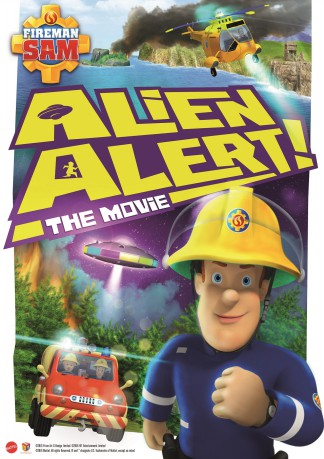

gesehen am 06.09.2018
gesehen am 06.09.2018Alternativ: Fireman Sam: Alien Alert! The Movie gesehen am 06.09.2018
 
 IMDB-Wertung: 5.5 / 10
IMDB-Wertung: 5.5 / 10  Metascore:
Metascore: 
Buck Douglas, the famous "Alien Quest" TV show host visits Pontypandy and everyone in town searches for aliens.
Jahr: 2016
Dauer: 60 Minuten
FSK:
Land: England Studio: Rough Trade DistributionTonspuren: DD5.1 - ,
Untertitel:
Auflösung: 1080p (1920x1080) Größe: 2457 MB
Genre: Animation/Trick
Regisseur: Gary Andrews
Drehbuch: Laura Beaumont, Paul Larson, Dave Gingell, Dave Jones, Rob Lee
Soundtrack: David Pickvance
Darsteller:
 David Tennant als Buck Douglas
David Tennant als Buck Douglas Nigel Whitmey als Moose Roberts
Nigel Whitmey als Moose RobertsDatei: X:\Kinder Collections\Feuerwehrmann Sam\Feuerwehrmann Sam Achtung Außerirdische! - Der Kinofilm (2016, FSK, 1920x1080).mkv seit 06.09.2018
Festplatte: Kinder-Filme+Trick
 Alle Filme aus Gruppe 'Kinder Collections\Feuerwehrmann Sam'
Alle Filme aus Gruppe 'Kinder Collections\Feuerwehrmann Sam'